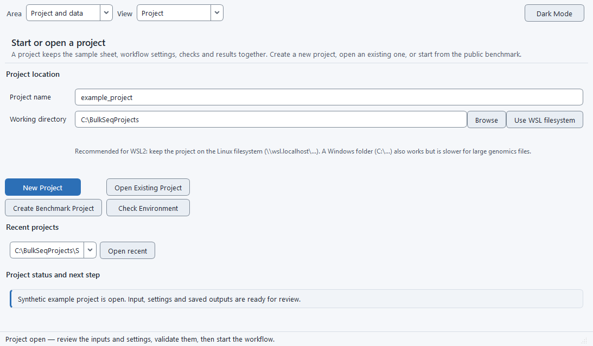

Bulk RNA-seq & microarray, no code
BulkSeq Studio
A free desktop app that takes you from raw reads or a count table to differential expression, functional enrichment, protein-interaction networks, and publication figures, without writing a single line of code.
BulkSeq Studio is for biologists who want to analyse their own bulk RNA-seq or microarray data without learning the command line. You point a tabbed graphical interface at your data and a reference genome; it runs a transparent Snakemake pipeline and produces a count matrix, a DESeq2 (or limma) results table, GO/KEGG enrichment, a STRING interaction network, and figures. Everything runs locally on your own machine, on Windows the pipeline runs inside WSL2, and on Linux it runs natively; either way the results are identical and every parameter, tool version, and reference is recorded so a run can be reproduced later.

What you get
Start from anything
Paste SRR/SRP/PRJ accessions and the app fetches the FASTQ files and builds the sample sheet, or point it at local FASTQ files (single-end or paired-end). Already have counts? Upload a gene-by-sample table to skip alignment. Already have a results table, a GEO microarray series (GSE), or your own microarray matrix? Those go straight to figures and enrichment too.
QC, trimming & alignment
FastQC and MultiQC report quality; trim with fastp, Trim Galore, or Trimmomatic; and choose the aligner: STAR (the default), HISAT2 (low memory, for large crop genomes), or Salmon (alignment-free, lightest of all). Optional rRNA depletion (SortMeRNA or the reference-free RiboDetector), a FastQ Screen contamination check, and RSeQC extended QC are built in. Both paired-end and single-end reads run through all three routes, which feed the same count matrix.
Differential expression
RNA-seq runs through DESeq2 (default) with apeglm shrinkage, VST normalization, and configurable significance thresholds, with optional limma-voom and edgeR quasi-likelihood engines as cross-checks; microarray intensities run through limma. A design helper builds the formula and contrast from your metadata columns, and you get separate up- and down-regulated gene lists plus an optional GSVA pathway-activity heatmap. Two or more independent studies of the same contrast can be combined in one multi-study meta-analysis to find the genes that respond consistently across all of them.
Functional enrichment
GO over-representation and GSEA run separately on the up- and down-regulated sets, with KEGG pathway analysis for any organism that has a KEGG code, GO through g:Profiler, and disease-ontology terms for human and mouse. You can also supply your own gene sets for a custom ORA and GSEA run.
Protein networks
A dedicated tab embeds the STRING protein-interaction network in an interactive cytoscape.js view: hover a protein for its fold-change and degree, re-layout, recolour by fold-change, resize by degree, filter by confidence, and export PNG, SVG, or Cytoscape files.
Built for non-model organisms
Crops and fungi are first-class. The reference catalog ships 46 organism presets, spanning model animals, crops, fungal and plant pathogens, bacteria, and a malaria parasite. KEGG enrichment runs for any organism with a KEGG code, and GO terms come through g:Profiler without needing a Bioconductor OrgDb, so an organism is never skipped just for lacking one. Validated on rice, Fusarium graminearum, Drosophila, and a human dataset.
Where to next
Install & quick start
Download the app, let the first-run setup install the tools, and run your first analysis from a public accession to differential expression and a protein network. Covers the five input modes too. Open the guide →
Analysis options
Every choice on the Workflow Settings tab: trimmer, rRNA tool, contamination screen, the three aligners and quantifiers, the three DE engines, the design helper, GSVA, RSeQC, and enrichment. See the options →
Outputs
The result tables, publication figures, MultiQC report, enrichment and network files, the self-contained HTML report, and the provenance a finished run leaves behind. See what you get →
Benchmarks
The B1–B15 validation suite: correctness against simulated truth, concordance with established tools, cross-aligner and cross-engine agreement, and a human-dataset applicability check. Read the validation →